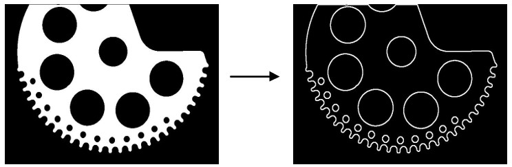

|
类型 |
轮廓 | ||||
|
描述 |
将连续的一条曲线轮廓分割成一段段的直线、圆弧等小的基元。 基元：一小段的轮廓段在给定的精度下能用如直线来拟合叫做直线基元，同理圆弧基元、椭圆弧基元也是如此，基元也是一段轮廓，如线段基元的分割属性为线段型。轮廓分割会产生一系列的基元，这些基元存储在列表中输出。 轮廓分割指令通常可结合高斯平滑指令ZV_ContGauss一起使用，高斯平滑可以将跳动较大的轮廓点进行一定程度的平滑，从而将轮廓分割地更为平滑 | ||||
|
语法 |
ZV_ContSegment(cont,list,type,eps1,eps2)
参数： cont：ZVOBJECT类型，输入，仅支持非多边形属性的轮廓；或是当分割类型type为0时属性为多边形的轮廓 list：ZVOBJECT类型，列表类型，输出，分割的基元存储在列表中 type：分割类型，分割成轮廓基元的类型，0、1类型用的较多
eps1：多边形近似的精度，即将曲线轮廓分割成小线段的精度，精度值越小对于后续的轮廓基元如圆弧分割则越精确，常用值1、1.5、2，建议值1 eps2：多边形轮廓融合成基元的精度，如某段轮廓拟合成圆弧的精度，即此轮廓拟合成圆弧的精度小于等于eps2则此段轮廓用圆弧基元表示，常用值1、1.5、2，eps2要大于等于eps1 | ||||
|
适用控制器 |
支持ZV功能或者5系列以上的控制器 | ||||
|
例子 |
 ZVOBJECT img,img_bw,cont_list ZV_ImgRead(img,"count1.jpg",0) '读取图片 ZV_ImpThresh(img,img_bw,200,255) '图像二值化 ZV_ContGen(img_bw,cont_list,1,0) '查找轮廓
' 将每个轮廓分割为直线和圆弧基元，并绘制结果 LOCAL cont_size,i ZVOBJECT dst,cont,cont_list_seg ZV_ImgCopy(img,dst) '复制图像 ZV_ImgSetConst(dst,0) '常数填充图像
cont_size= ZV_ObjCount(cont_list) '获取轮廓个数 FOR i = 0 TO cont_size-1 ZV_ObjSelect(cont_list,cont,i) '获取某个轮廓 ZV_ContSegment(cont,cont_list_seg,1,1,1) '将轮廓分割成直线和圆弧基元 ZV_DraContour(dst,cont_list_seg,255) '绘制轮廓(这里绘制的是轮廓列表) NEXT |